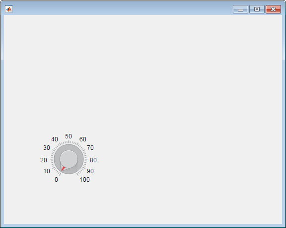
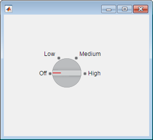
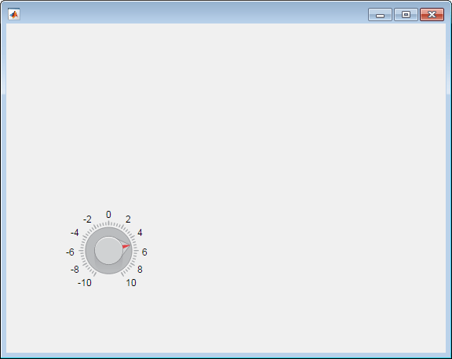
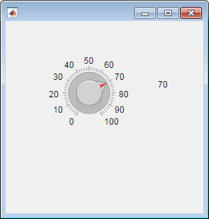
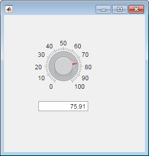
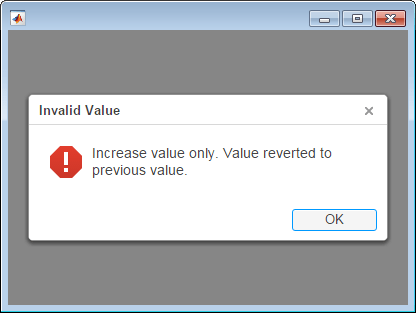

uiknob
Create knob component
Syntax
Description
kb = uiknobKnob object.
MATLAB® calls the uifigure function to create the
figure.
kb = uiknob(style)
kb = uiknob(parent)Figure object or one of its child
containers.
kb = uiknob(___,Name,Value)Name,Value pair
arguments. Use this option with any of the input argument combinations in the
previous syntaxes.
Examples
fig = uifigure; kb = uiknob(fig);

Specify a Figure object as
the parent container.
fig = uifigure('Position',[100 100 300 250]); kb = uiknob(fig,'discrete');

Create a continuous knob in a figure.
fig = uifigure; kb = uiknob(fig);
Determine the knob limits.
limits = kb.Limits
limits =
0 100Change the limits and the knob value.
kb.Limits = [-10 10]; kb.Value = 5;

Create a discrete knob.
fig = uifigure;
kb = uiknob(fig,'discrete');
Change the knob states. Associate specific data with the knob states by
configuring ItemsData. In this case,
ItemsData reflects temperatures in degrees
Fahrenheit.
kb.Items = {'Cold', 'Warm', 'Hot'};
kb.ItemsData = {32, 80, 212};

Get the temperature associated with the current knob value.
degrees = kb.Value
degrees =
32Create a discrete knob that performs an action after the app user turns it. Turning the knob updates the value of an edit field to reflect the app user's choice.
Copy and paste the following code into a file named
displayknobvalue.m on your MATLAB path. This code creates a window containing a discrete knob
and an edit field. It specifies a ValueChangedFcn
callback to update the edit field when the knob is turned.
function displayKnobValue % Create figure window fig = uifigure('Position',[100 100 283 275]); % Create the text field txt = uieditfield(fig,'text',... 'Position', [69 82 100 22]); % Create the knob kb = uiknob(fig,'discrete',... 'Position',[89 142 60 60],... 'ValueChangedFcn',@(kb,event) knobTurned(kb,txt)); end % Code the knob callback function function knobTurned(knob,txt) txt.Value = knob.Value; end
Run displayKnobValue, and then turn the knob. When you
release the mouse button, the edit field is updated to reflect the new knob value.

Create a continuous knob that performs an action after the user turns it. Turning the knob updates the value of a label to reflect the user's choice.
Copy and paste the following code into a file named
showknobvalue.m on your MATLAB path. This code creates a window containing a continuous knob
and a label field. It specifies a ValueChangedFcn
callback to update the label when the knob is turned.
function showKnobValue % Create figure window and components fig = uifigure('Position',[100 100 283 275]); % Create label lbl = uilabel(fig,... 'Position',[218 177 50 15],... 'Text','0'); % Create knob kb = uiknob(fig,... 'Position',[89 142 60 60],... 'ValueChangedFcn', @(kb,event) knobTurned(kb,lbl)); end % Create ValueChangedFcn callback function knobTurned(kb,lbl) num = kb.Value; lbl.Text = num2str(num); end
Run showKnobValue and turn the knob. When you release
the mouse button, the label is updated to reflect the new knob value.

Create a continuous knob that repeatedly performs an action as the user is turning it. Instead of updating an edit field once when the user releases the mouse button, this knob updates the edit field as the knob is being turned.
Copy and paste the following code into a file named
showchangingvalue.m on your MATLAB path. This code creates a window containing a continuous knob
and an edit field. It specifies a ValueChangingFcn
callback to keep updating the edit field as the knob is being turned.
function showChangingValue % Create figure window fig = uifigure('Position',[100 100 283 275]); % Create numeric edit field num = uieditfield(fig,'numeric',... 'Position',[69 82 100 20]); % Create knob kb = uiknob(fig,... 'Position',[89 142 60 60],... 'ValueChangingFcn',@(kb,event) knobTurned(kb,event,num)); end % Create ValueChangingFcn callback function knobTurned(kb,event,num) num.Value = event.Value; end
Run showChangingValue, and turn the knob. As you do so,
the edit field is updated to show the changing knob values.

Create a continuous knob that performs an action after the user turns it. Each turn of the knob causes MATLAB to perform a calculation using the current and previous knob values.
Copy and paste the following code into a file named
increaseOnly.m on your MATLAB path. This code creates a window containing a continuous knob.
It specifies a ValueChangedFcn callback for the knob to
display an Invalid Value dialog box when the app user
attempts to decrease the knob value.
function increaseOnly % Create figure window fig = uifigure('Position',[100 100 400 275]); % Create knob kb = uiknob(fig,... 'Position',[150 125 60 60],... 'ValueChangedFcn',@(kb,event) nValChanged(kb,event,fig)); end % Create ValueChangedFcn callback function nValChanged(kb,event,fig) newvalue = event.Value; previousvalue = event.PreviousValue; if previousvalue > newvalue uialert(fig, 'Increase value only. Value reverted to previous value.', ... 'Invalid Value'); kb.Value = previousvalue; end end
Run increaseOnly, increase the knob value, and then try
to decrease it. When you try to decrease the value, an error dialog box
displays and the value is reverted to the previous valid value. You can only
increase the knob value.
